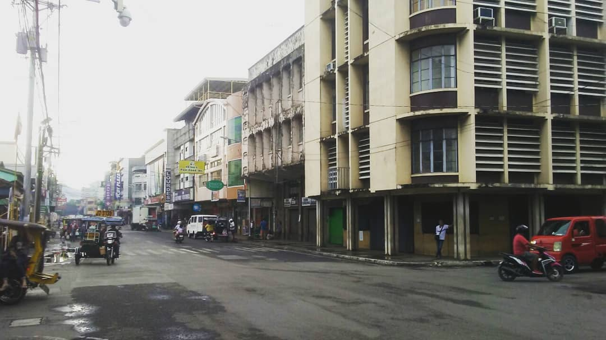
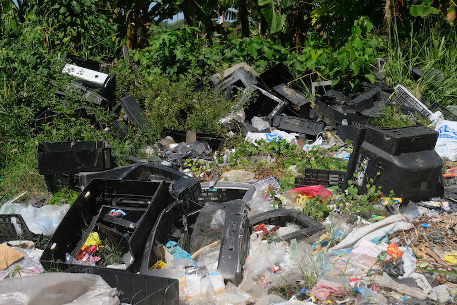
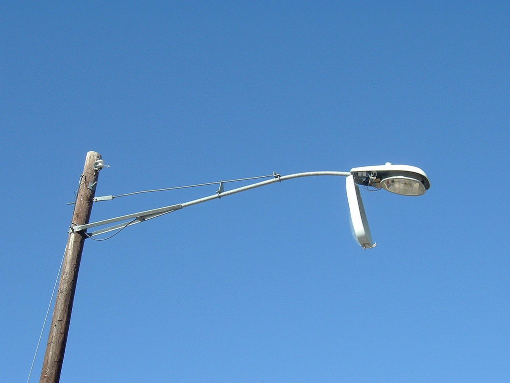

DIGITAL CIVIC REPORTING
Street Cred transforms infrastructure reporting in Zamboanga City. Report issues, track progress, and help build a better community.

Street Cred is built to help citizens report concerns quickly while giving officials clear tools for review, updates, and resolution.
Citizens can submit infrastructure concerns with location details and photo evidence in a clear guided flow.
Transparent updates help residents understand when a report is submitted, under review, or resolved.
Officials get practical tools to review, prioritize, and communicate progress back to the public.
Parallel guidance helps both residents and city teams understand the reporting flow.
Choose the issue type and describe the problem clearly.
Add a landmark or address with a supporting photo.
Submit the report and receive a status update trail.
Follow official comments until the issue is resolved.
Review incoming reports by category, urgency, and location.
Assign the issue for verification and field response.
Post updates so residents can monitor progress.
Resolve the case and document the final action taken.
Stay informed on the latest infrastructure updates across Zamboanga City. From waste collection in Tetuan to utility repairs in Santa Maria, track how our community is working together to resolve local issues.

Waste
Garbage has been collected at the side of the highway going Talon-Talon. The area has been cleared to ensure public hygiene.
Don Alfaro St, Tetuan, Zamboanga City

Electricity
The streetlight at the corner of Gov. Ramos Ave and MCLL Highway has been flickering and finally went out.
Gov. Ramos Ave, Santa Maria, Zamboanga City
Ask questions about services, reporting guidance, or department coordination. Messages are recorded for follow-up.